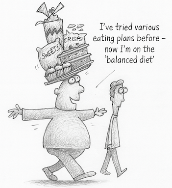

Doing It
Tracy originally lost half a stone by giving up chocolate and making an effort to start doing some exercise e.g. by taking a walk at lunch time or a walk before work around the local park – to counteract the overall sedentary effect of her lifestyle working as a publisher of books. She also does a series of stomach exercises to try and stay supple, once or twice a week for about ten minutes (she describes these as ‘crunchies’ – where she lies on her back, with legs up in the air and bent at the knees, doing scissor movements).
Tracy has overcome her dislike of exercise and has managed to integrate exercise into her daily life in such a way that she can maintain regular levels of physical activity for the foreseeable future. Once she started using her exercise cycle at home she lost the 2 stones in weight she had hoped to lose, and has kept it off since.
Tracy sits on her exercise bike and reads a book whilst she is burning up calories cycling. Whilst cycling she imagines herself wearing a glamorous evening dress at sometime in the future, to reinforce her motivation.
She tries to do 20 minutes cycling each day, but accepts that ten minutes is better than nothing. She had had the cycle for ages but hadn’t used it. In general she hates exercise as she thinks it is spare time she has when she could be reading. So, by combining her passion for reading with regular exercise is the way that Tracy has managed to integrate regular exercise into her daily life in such a way that her changed exercise habits have a good chance of persisting for very many years.

Getting a pet that needs regular exercise is another way to force yourself to take regular exercise whether or not you feel like doing it on a day to day basis as Brian did.
Brian is on the go an awful lot as a hospital administrator. He has two dogs and walks them for an hour in the evening whatever the weather. At lunchtime he walks briskly around the hospital site for an extra bout of exercise, that helps to give him a breather from the stresses of work as well as allowing him an opportunity to keep an eye out for anything unusual that is happening in the hospital grounds.

Brian rates healthy living rather than being over careful with restricting his diet / amount he eats. He believes that you should look after your well-being and boost your fitness rather than being on a ‘diet’. That has to involve regular exercise he thinks. He sees healthy living as a whole package involving regular physical activity, a balanced diet and time for leisure and family.
At age 59 years old, Melvyn illustrates that it is never too late to make a significant change to your life that boosts or restores your health and well-being. A different way of making a lifestyle change that controls your weight as an integral part of your daily life, is to change your job as Melvyn did with the advantages of an active job for someone who was previously sedentary at work.
Melvyn became a meter reader working for a gas company when he was made redundant as a senior manager for a big company. At first it seemed as if the new job was a bit of a come down after Melvyn’s previous senior position, taken as a stop gap whilst he was waiting to find a better job. But the increased exercise as a meter reader, walking from house to house has meant that Melvyn has lost 2.5 stones without trying, since he started his new job a year ago and despite eating more than he used to. He walks about 8 miles a day and swims once a week just to keep his joints ‘loose’. He is revelling in being fit again – no longer looking for that next job.